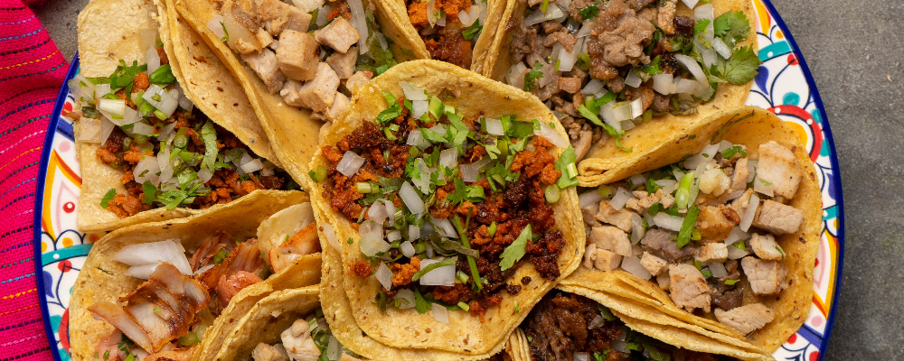

Tacos
Griddled
Description
Street-style carne asada tacos are a quintessential Mexican delight. They feature grilled, marinated beef (carne asada) served on small corn tortillas, often garnished with onions, cilantro, and salsa, offering a flavorful, portable, and popular street food experience.
Ingredients
- Skirt or flank steak
- Corn tortillas
- White onion
- Fresh cilantro
- Lime
- Salsa (red or green)
- Meat seasoning or marinade
Steps
- Season or marinate the steak
- Grill the steak
- Slice the grilled stake into strips
- Warm tortillas on the grill or on a dry skillet
- Assemble tacos by placing a few strips of meat and topping with onions, cilantro and salsa
- Serve with lime on the side